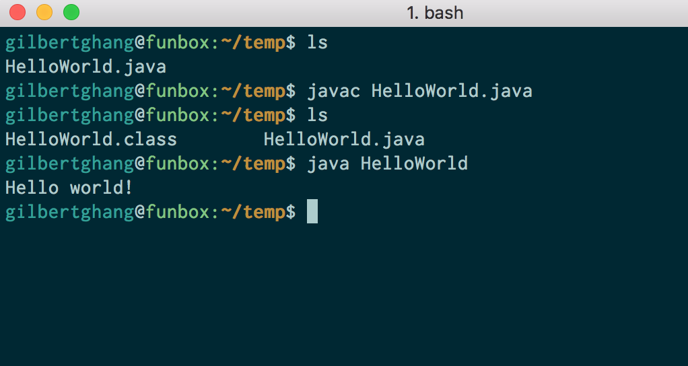

We encourage you to complete as much of this setup as you can on your own before coming to lab. If you get stuck, come to office hours or lab to get help.
A. Configure Your Computer
Depending on your oeprating system, there are a bunch of things we need to do to set your computer up for 61B.
The precise steps to take depend on your operating system.
Move on to the next section only once you’ve completed the instructions above for your operating system. Advanced users on Windows may also use the new Bash for Windows feature, but we will not be providing official directions. Note that if you use Bash for Windows, you’ll need to install Java twice (once inside Bash for Windows, and once inside Windows itself, following the directions above).
B. Learn to Use the Terminal
If you already know how to open and use a terminal, skip this section.
The terminal is an application that allows you to run all sorts of programs, as well as manipulate files in your own computer. It is a powerful but also dangerous tool, so please be careful with using some of these commands. On UNIX operating systems, the Terminal application will provide you with everything that you need. On Mac OS, for example, you can use Spotlight to search for the Terminal application.
The lab computers run on the UNIX operating system. As such, you can use xterm commands to make changes to your directory and files. Here are some important ones that you may find useful in this course:
cd: change your working directorycd hwThis command will change your directory to
hw.pwd: present working directorypwdThis command will tell you the full absolute path for the current directory you are in if you are not sure where you are.
.: means your current directorycd .This command will change your directory to the current directory (aka. do nothing).
..: means one parent directory above your current directorycd ..This command will change your directory to its parent. If you are in /workspace/day1/, the command will place you in /workspace/.
ls: list files/folders in directorylsThis command will list all the files and folders in your current directory.
ls -lThis command will list all the files and folders in your current directory with timestamps and file permissions. This can help you double-check if your file updated correctly or change the read-write- execute permissions for your files.
mkdir: make a directorymkdir dirnameThis command will make a directory within the current directory called
dirname.rm: remove a filerm file1This command will remove file1 from the current directory. It will not work if
file1does not exist.rm -r dir1This command will remove the
dir1directory recursively. In other words, it will delete all the files and directories indir1in addition todir1itself. Be careful with this command!cp: copy a filecp lab1/original lab2/duplicateThis command will copy the
originalfile in thelab1directory and and create aduplicatecopy in thelab2directory.mv: move or rename a filemv lab1/original lab2/originalThis command moves
originalfromlab1tolab2. Unlikecp, mv does not leave original in thelab1directory.mv lab1/original lab1/newnameThis command does not move the file but rather renames it from
originaltonewname.
There are some other useful tricks when navigating on command line:
-
UNIX can complete file names and directory names for you with tab completion. When you have an incomplete name (for something that already exists), try pressing the
tabkey for autocomplete or a list of possible names. -
If you want to retype the same instruction used recently, press the
upkey on your keyboard until you see the correct instruction. This saves typing time if you are doing repetitive instructions (like running Java programs on command line while testing).
C. Test Run
Let’s ensure that everything is working.
- First open up your terminal. Check that git is a recognized command by typing
the following command:
git --versionThe version number for git should be printed. If you see “git: command not found”, or similar, try opening a new terminal window, restarting your computer, or installing Git again.
-
In the terminal, check that python is a recognized command:
python -iThis should start python in the interactive mode. Use
quit()to exit. If it doesn’t work, try the commandpython3 -iinstead, opening a new terminal window, restarting your computer, or reinstalling Python. If none of those work, see the Troubleshooting guide under your operating system. -
Lastly, let’s check that
javacandjavaare working. Start by running the following commands at your terminal.mkdir ~/temp cd ~/temp-
Then, open your operating system’s file explorer in this directory. You can do this from the command line:
- Mac:
open . - Windows:
explorer . - Ubuntu:
gnome-open . - Linux Mint:
xdg-open .ormate .
- Mac:
-
In this newly opened directory, create a file
HelloWorld.javawith these contents:public class HelloWorld { public static void main(String[] args) { System.out.println("Hello world!"); } } -
In your terminal, enter
ls(list the files/folders in this directory). You should seeHelloWorld.javalisted. -
Run
javac HelloWorld.java. If this produces any output, then something may be wrong with your setup. Try opening a new terminal window or restarting your computer. If that still doesn’t work, see the Troubleshooting section under the directions for your operating system. -
Type
ls, you should see bothHelloWorld.javaand a freshly createdHelloWorld.class(thejavaccommand created this file). -
Run
java HelloWorld. It should print out “Hello world!” for you. If it didn’t, something is wrong with your setup! -
You’re done! You can also delete the “temp” folder and its contents as you please.
The screenshot below shows what we’re hoping for when we do steps 4-7. If you see something similar to this, your java setup is complete. 
-